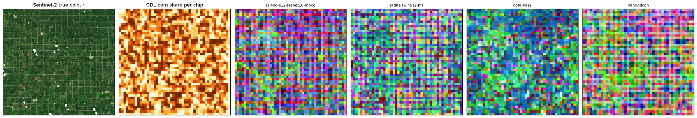

Every foundation model was trained on inputs of one particular form: certain bands in a certain order, values in certain units, a certain normalization and chip size. Feed it something else and it still returns embeddings, only worse ones, and nothing warns you. This notebook takes a Sentinel-2 scene of the Iowa Corn Belt through the whole path from raster to embedding map with geolattice.rsense.foundation_models: reading the input contract of a model, preparing bands, chipping, embedding with four different models, measuring what a wrong normalization costs, timing CPU and GPU, and saving the result so it can be reused without the model.
Overview
The input contract of a model
A pretrained encoder learned its weights from data prepared in one way. Five properties of that preparation define its input contract:
the first layer applies “red” weights to the NIR band
Units
digital numbers (reflectance x 10,000), reflectance 0 to 1, dB for SAR
values are 10,000 times too small or large
Normalization
per-band mean and standard deviation of the pretraining data
features drift away from the range the model has seen
Chip size and resolution
224 pixels at 30 m (Prithvi), 256 at 10 m (Satlas)
objects appear at a scale the model never saw
Time steps
1 to 4 frames (Prithvi-EO-2.0)
wrong tensor shape, or frames read as bands
Wavelength-aware models (DOFA, Copernicus-FM, Panopticon) relax the first property: they build their input layer from the band wavelengths, so any band set works, but units and normalization still matter.
Pooled and patch embeddings
embed_raster cuts a raster into chips and returns one vector per chip (pooled), or with dense=True the grid of patch vectors inside every chip. A chip is the unit the model sees at once: a 224 pixel chip of 20 m Sentinel-2 covers 4.5 km, so its pooled embedding describes a landscape, while 32 pixel chips resized to 224 describe single fields. Resizing changes the apparent ground resolution, another departure from the contract that this notebook makes on purpose and measures.
Why it fails silently
A neural network has no notion of units. A chip in reflectance (0 to 0.5) given to a model that expects digital numbers (0 to 5,000) produces activations near zero, a nearly constant embedding and a probe that barely beats guessing, yet no error is raised. The only defence is to check the contract (fm.input_spec) and to measure, as below.
Embedding Rasters with GeoLattice
Function
Purpose
fm.input_spec(name)
the input contract: bands, units, statistics, chip size
fm.prepare(name, da)
reorder and fill bands, convert units, normalize
fm.band_wavelengths(bands)
band centre wavelengths for wavelength-aware models
fm.chip_raster(da, chip_size, stride)
cut a raster into chips with chip centre coordinates
fm.load_model(name)
a FoundationEncoder with encode, embed, embed_raster, dense_features
fm.embedding_rgb, fm.embeddings_to_frame
view and tabulate embedding maps
Learning objectives
Read the input contract of a model and prepare a raster to match it.
Know the parts of a FoundationEncoder and the difference between pooled and patch embeddings.
Cut a raster into chips and keep their georeferencing.
Embed one scene with four models and compare the embedding maps.
Measure the cost of a wrong normalization with a linear probe.
Time embedding on the CPU and the GPU, and save embeddings with their provenance.
Data
Dataset
Content
Corn Belt Sentinel-2 cube
Iowa, 30 x 29 km, 10 bands at 20 m, 26 August 2025 (from the 34-date cube of chapter 08_09)
Cropland Data Layer 2025
USDA CDL on the same 20 m grid, grouped into six classes
Contents
Setup
The input contract
Anatomy of a FoundationEncoder
Preparing a raster for a model
Chips and their labels
Four models, four embedding maps
What a wrong normalization costs
CPU and GPU
Saving embeddings with their provenance
From the image classification loaders to fm
Summary and exercises
Setup
Installation. This notebook needs installation option 6 (every GeoLattice module): pip install "geolattice[all]". See “Installation options” in the GeoLattice README. It also uses geolattice[rsense-foundation], which no GeoLattice option installs: pip install "geolattice[rsense-foundation]".
Code
import os # environment variablesos.environ.setdefault("USE_TF", "0") # keep transformers from loading TensorFlowimport time # timingimport warnings # warning controlwarnings.filterwarnings("ignore") # hide routine library warningsfrom pathlib import Path # file pathsimport matplotlib.pyplot as plt # figuresimport numpy as np # arraysimport pandas as pd # tablesimport rioxarray # noqa: F401 (registers the .rio accessor)import torch # PyTorch: every model runs on itimport xarray as xr # labelled rastersimport geolattice # GeoLatticeimport geolattice.rsense.foundation_models as fm # catalog, loaders, embeddings and probesplt.rcParams.update({"figure.dpi": 110}) # figure resolutionDATA = Path("../../../../Data/08_remote_sensing") # remote sensing data folderIC = DATA /"09_09_image_classification"# data shared with the image classification chapterCAP = DATA /"08_11_Capstones"# data shared with the capstonesOUT = Path("outputs") # results written by this notebookOUT.mkdir(exist_ok=True) # create it if neededDEVICE ="cuda"if torch.cuda.is_available() else"cpu"# run models on the GPU when there is oneSEED =0# one seed for every random stepnp.random.seed(SEED) # NumPytorch.manual_seed(SEED) # PyTorchprint("GeoLattice", geolattice.__version__, "| PyTorch", torch.__version__, "| device", DEVICE) # versions usedif DEVICE =="cuda": # name the GPUprint("GPU:", torch.cuda.get_device_name(0)) # GPU modelCUBE = IC /"Corn_belt"/"cache_20m"# Corn Belt cubes on the 20 m gridCLASSES = ["Corn", "Soybeans", "Grass/pasture", "Developed", "Wetland/forest", "Other"] # CDL groups 0 to 5COLORS = ["#e6c229", "#2a9d3c", "#b9e08b", "#d7301f", "#1f5fbf", "#7f7f7f"] # one colour per class
The scene is one date of the Corn Belt cube built in chapter 08_09: ten Sentinel-2 L2A bands resampled to 20 m, in surface reflectance (0 to 1), clouds set to NaN. The CDL of the same year is on the same grid.
fm.input_spec returns the contract recorded for a model: the bands in order (GeoLattice names), the units the statistics refer to, the mean and standard deviation, and the chip size. The values come from the TorchGeo weight transforms, the TerraTorch pretraining constants and the model cards.
Code
names = ["prithvi-eo-2.0-300m", "ssl4eo-s12-resnet18-moco", "satlas-swint-s2-ms", "scale-mae","terramind-v1-base", "dofa-base", "panopticon", "ssl4eo-s1-resnet50-moco"] # models to comparerows = [] # one row per modelfor n in names: # every model sp = fm.input_spec(n) # its contract rows.append({"model": n, "bands": "any (wavelength-aware)"if sp["bands"] isNoneelse", ".join(sp["bands"]),"units": sp["units"], "statistics": "per-band standardization"if sp["mean"] isNoneelsef"mean {sp['mean'][0]:g}.., std {sp['std'][0]:g}..", "chip": sp["img_size"]}) # summarypd.DataFrame(rows).set_index("model") # the contracts side by side
bands
units
statistics
chip
model
prithvi-eo-2.0-300m
blue, green, red, nir08, swir16, swir22
dn
mean 1087.., std 2248..
224
ssl4eo-s12-resnet18-moco
coastal, blue, green, red, rededge1, rededge2,...
dn
mean 0.., std 10000..
224
satlas-swint-s2-ms
red, green, blue, rededge1, rededge2, rededge3...
dn
mean 0.., std 3000..
256
scale-mae
red, green, blue
unit
mean 0.485.., std 0.229..
224
terramind-v1-base
coastal, blue, green, red, rededge1, rededge2,...
dn
mean 1390.46.., std 2106.76..
224
dofa-base
any (wavelength-aware)
any
per-band standardization
224
panopticon
any (wavelength-aware)
any
per-band standardization
224
ssl4eo-s1-resnet50-moco
vv, vh
db
mean -12.59.., std 5.26..
224
Three patterns stand out. Prithvi and TerraMind standardize digital numbers with the statistics of their pretraining archives. SSL4EO and Satlas only divide by a constant (Satlas takes red, green and blue from Sentinel-2’s 8-bit true colour product, which prepare approximates by dividing by 3,000). DOFA and Panopticon accept any bands and have no fixed statistics, so each band is standardized over the scene.
Anatomy of a FoundationEncoder
fm.load_model builds the network, downloads the weights on first use and wraps both in a FoundationEncoder. The SSL4EO ResNet-18 is small and quick, so it is a good first example.
Code
enc = fm.load_model("ssl4eo-s12-resnet18-moco", device=DEVICE) # SSL4EO-S12 ResNet-18, MoCo weightsprint(enc) # name, loader, embedding size, deviceprint("catalog entry:", enc.spec.architecture, "|", enc.spec.inputs) # the catalog record it came fromprint("network:", type(enc.model).__name__, "|", f"{sum(p.numel() for p in enc.model.parameters()) /1e6:.1f} M parameters") # the torch modulex = torch.randn(2, 13, 224, 224) # two random 13-band chipsprint("forward_features:", tuple(enc.forward_features(x).shape)) # raw output: a feature mapprint("encode:", tuple(enc.encode(x).shape)) # pooled: one vector per chip
forward_features returns what the network produces: for a ResNet a 512 x 7 x 7 feature map (the 224 pixel chip downsampled 32 times). encode pools it to one 512 value vector per chip, and embed does the same in batches and returns NumPy. A vision transformer returns tokens instead, and pooling can take the class token or the mean of the patch tokens.
Code
vit = fm.load_model("ssl4eo-s12-vits16-dino", device=DEVICE) # SSL4EO ViT-Small, DINO weightstok = vit.forward_features(x) # (chips, 1 + 196 tokens, 384)cls_vec, mean_vec = vit.encode(x, pool="cls"), vit.encode(x, pool="mean") # two pooling choicesprint("tokens:", tuple(tok.shape), "| dense grid:", vit.dense_features(x).shape) # tokens and patch gridprint("cosine(CLS, mean of patches):", torch.nn.functional.cosine_similarity(cls_vec, mean_vec).cpu().numpy().round(3)) # how different they are
tokens: (2, 197, 384) | dense grid: (2, 384, 14, 14)
cosine(CLS, mean of patches): [0.107 0.074]
The 197 tokens are one class token plus a 14 x 14 grid of 16 pixel patches; dense_features drops the class token and reshapes the rest into that grid. The CLS vector and the mean of the patch tokens are different summaries of the same chip, which is why the pooling choice must stay fixed within an analysis.
Preparing a raster for a model
fm.prepare applies the contract to a raster. For the SSL4EO model the Corn Belt stack lacks three of the thirteen bands (coastal aerosol, water vapour and cirrus); prepare fills each from the band nearest in wavelength and records what it filled. For Prithvi it picks six bands, converts reflectance to digital numbers and standardizes with the HLS statistics.
Code
for n in ["ssl4eo-s12-resnet18-moco", "prithvi-eo-2.0-300m", "satlas-swint-s2-ms", "dofa-base"]: # four contracts p = fm.prepare(n, s2) # bands, units and normalization for model nprint(f"{n:26s} bands {p.sizes['band']:2d} | filled: {p.attrs['filled_bands'] or'-':28s} | "f"mean {float(p.mean()):6.2f}, std {float(p.std()):5.2f}") # what prepare didprint("wavelengths (nm) used by DOFA:", fm.band_wavelengths(list(s2.band.values))) # DOFA reads these
ssl4eo-s12-resnet18-moco bands 13 | filled: coastal,watervapor,cirrus | mean 0.20, std 0.17
prithvi-eo-2.0-300m bands 6 | filled: - | mean -0.17, std 0.53
satlas-swint-s2-ms bands 9 | filled: - | mean 0.24, std 0.17
dofa-base bands 10 | filled: - | mean -0.00, std 1.00
wavelengths (nm) used by DOFA: [490.0, 560.0, 665.0, 705.0, 740.0, 783.0, 842.0, 865.0, 1610.0, 2190.0]
After preparation Prithvi’s values have a mean near zero and a standard deviation near one, as the pretraining data had; the SSL4EO input is reflectance, as SSL4EO expects. Filling missing bands from neighbours is a compromise: the coastal band (443 nm) copied from blue (490 nm) is close, the cirrus band (1375 nm) copied from SWIR 1 (1610 nm) is not, since real cirrus reflectance is near zero over clear land. The probe below shows how much such compromises cost.
Chips and their labels
fm.chip_raster cuts the scene into square chips and returns the coordinates of their centres. Here the chips are 32 pixels (640 m), about one field, so each chip can carry one crop label: the majority CDL class, kept when it covers at least 60 % of the chip. The scene edges are padded by reflection so every pixel falls in a chip.
Code
CHIP =32# chip size in 20 m pixels (640 m)chips, ys, xs = fm.chip_raster(s2, chip_size=CHIP) # (n, band, 32, 32) and chip centresprint("chips:", chips.shape, f"on a {len(ys)} x {len(xs)} grid") # count and layoutdef chip_labels(lab, chip): # majority class and its share in every chip (row-major order) a = lab.values # class codes, -1 = none ny, nx =-(-a.shape[0] // chip), -(-a.shape[1] // chip) # chips per column and row pad = np.full((ny * chip, nx * chip), -1, a.dtype); pad[:a.shape[0], :a.shape[1]] = a # pad with "none" blocks = pad.reshape(ny, chip, nx, chip).transpose(0, 2, 1, 3).reshape(ny * nx, -1) # pixels per chip counts = np.stack([(blocks == k).sum(1) for k inrange(len(CLASSES))], 1) # pixels per classreturn counts.argmax(1), counts.max(1) / blocks.shape[1] # majority class and its sharemajor, purity = chip_labels(cdl, CHIP) # one label per chipok = purity >=0.6# chips dominated by one classgy, gx = np.divmod(np.arange(len(major)), len(xs)) # chip row and columnblock = (gy //9) *10+ gx //9# 9 x 9 chip blocks (5.8 km) for spatial cross-validationprint(ok.sum(), "labelled chips in", len(np.unique(block[ok])), "spatial blocks") # usable samplespd.Series(major[ok]).map(dict(enumerate(CLASSES))).value_counts() # chips per class
chips: (2208, 10, 32, 32) on a 46 x 48 grid
1458 labelled chips in 30 spatial blocks
Corn and soybeans dominate, as they do in Iowa; developed land and wetland/forest chips are rare, because 640 m chips seldom contain 60 % of either. The blocks group neighbouring chips, so a probe trained in one block is tested in other blocks, not on the field next door.
Four models, four embedding maps
embed_raster(norm="model") prepares the scene with the model’s contract, chips it and resizes each 32 pixel chip to the model’s input size. The four models differ in architecture and pretraining data: an SSL4EO ResNet-18, a Satlas Swin-T, DOFA and Panopticon.
Code
MODELS = ["ssl4eo-s12-resnet18-moco", "satlas-swint-s2-ms", "dofa-base", "panopticon"] # models to compareemb, secs = {}, {} # embedding maps and run timesfor n in MODELS: # every model e = fm.load_model(n, device=DEVICE) # load (downloads once) t0 = time.perf_counter() # start the clock emb[n] = e.embed_raster(s2, chip_size=CHIP, norm="model", batch_size=64) # (D, 46, 48) map secs[n] = time.perf_counter() - t0 # seconds for the scenedel e; torch.cuda.empty_cache() if DEVICE =="cuda"elseNone# free the GPUpd.DataFrame({"embedding size": {n: emb[n].sizes["embedding"] for n in MODELS},"seconds for the scene": pd.Series(secs).round(1)}) # sizes and run times
embedding size
seconds for the scene
ssl4eo-s12-resnet18-moco
512
2.3
satlas-swint-s2-ms
768
9.3
dofa-base
768
15.5
panopticon
768
41.5
Code
pad = np.full((len(ys) * CHIP, len(xs) * CHIP), -1); pad[:cdl.shape[0], :cdl.shape[1]] = cdl.values # padded CDLcorn = (pad.reshape(len(ys), CHIP, len(xs), CHIP) ==0).mean((1, 3)) # share of corn in every chipfig, ax = plt.subplots(1, 6, figsize=(24, 4.4)) # six panelsax[0].imshow(rgb, extent=ext); ax[0].set_title("Sentinel-2 true colour") # the sceneax[1].imshow(corn, cmap="YlOrBr", extent=ext, interpolation="nearest"); ax[1].set_title("CDL corn share per chip") # referencefor a, n inzip(ax[2:], MODELS): # every model a.imshow(fm.embedding_rgb(emb[n]).transpose("y", "x", "band"), extent=ext, interpolation="nearest") # PCA colours a.set_title(n, fontsize=9) # model namefor a in ax: # all panels a.set_xticks([]); a.set_yticks([]) # no ticksplt.tight_layout(); plt.show() # draw

Each model panel shows the first three principal components of its embeddings as colours, one square per 640 m chip. The maps look speckled, and so does the corn share: in this landscape of square-mile sections every chip holds a different mix of corn and soybean fields, so neighbouring chips differ more than distant regions do. The models still disagree with one another. DOFA’s colours vary most smoothly across the scene, while the ResNet, Swin and Panopticon maps change more from chip to chip, a sign that they respond to different contrasts within each chip. A visual impression is not a measure, so a probe follows.
fm.embeddings_to_frame flattens a map to a table, one row per chip with its coordinates, ready to join with labels or to export.
Code
tab = fm.embeddings_to_frame(emb["dofa-base"], dropna=False) # one row per chiptab["class"] = pd.Series(major).map(dict(enumerate(CLASSES))).where(ok) # CDL class of usable chipstab.iloc[:5, list(range(5)) + [-1]] # first columns
y
x
e000
e001
e002
class
0
4766900.0
411740.0
-0.094661
-0.805666
-0.328185
NaN
1
4766900.0
412380.0
-0.065035
-0.662149
-0.451274
Soybeans
2
4766900.0
413020.0
-0.093712
-0.792667
-0.411797
Soybeans
3
4766900.0
413660.0
0.067593
-0.535428
-0.275365
Corn
4
4766900.0
414300.0
0.213348
-0.630041
-0.208639
Corn
A linear probe with spatial-block cross-validation measures how much crop information each map holds. Only corn and soybeans have at least 20 pure chips, so the probe separates those two; the rare classes would make the macro F1 score meaningless. The baseline is the mean reflectance of the ten bands in each chip.
Code
ok &= np.isin(major, np.flatnonzero(np.bincount(major[ok], minlength=len(CLASSES)) >=20)) # classes with 20+ chipsy_ok, g_ok = major[ok], block[ok] # labels and blocks of usable chipsprint(ok.sum(), "chips:", pd.Series(y_ok).map(dict(enumerate(CLASSES))).value_counts().to_dict()) # what the probe seesflat =lambda m: m.values.reshape(m.sizes["embedding"], -1).T # (chips, D) in chip orderbandmean = np.nan_to_num(chips.mean((2, 3))) # baseline: mean reflectance per band and chipres = {"band means (baseline)": fm.linear_probe(bandmean[ok], y_ok, groups=g_ok)["mean"]} # baseline probefor n in MODELS: # every model res[n] = fm.linear_probe(flat(emb[n])[ok], y_ok, groups=g_ok)["mean"] # spatial 5-fold probeprobe = pd.DataFrame(res).T.round(3) # accuracy and macro F1 per inputprobe
1449 chips: {'Corn': 940, 'Soybeans': 509}
accuracy
f1_macro
band means (baseline)
0.988
0.986
ssl4eo-s12-resnet18-moco
0.966
0.963
satlas-swint-s2-ms
0.987
0.986
dofa-base
0.998
0.998
panopticon
0.994
0.993
In late August corn and soybeans differ so clearly in their spectra that the ten band means already classify almost every chip correctly, so there is little room for any encoder to add information. DOFA and Panopticon reach slightly higher scores than the baseline, Satlas matches it and the SSL4EO ResNet-18 falls below it, with three of its thirteen input bands filled from neighbours. That is a lesson in itself: when a simple spectral baseline nearly saturates, a foundation model brings cost, not accuracy. Notebook 09_11_04 moves to a harder setting (patch embeddings, an early-season date and fewer labels), where the differences between models are larger.
What a wrong normalization costs
The same SSL4EO model is run three ways: with its contract (reflectance, the SSL4EO scaling), with reflectance mistaken for digital numbers (values 10,000 times too small), and with per-scene standardization instead of the model’s statistics. The cosine similarity to the correct embeddings and the probe accuracy show the cost.
Code
ssl = fm.load_model("ssl4eo-s12-resnet18-moco", device=DEVICE) # the SSL4EO ResNet-18 againvariants = { # three ways of preparing the same scene"contract (reflectance)": fm.prepare("ssl4eo-s12-resnet18-moco", s2), # correct"reflectance read as DN": fm.prepare("ssl4eo-s12-resnet18-moco", s2, units="dn"), # 10,000 times too small}variants["per-scene standardization"] = fm.prepare("ssl4eo-s12-resnet18-moco", s2).pipe(lambda p: (p - p.mean(("y", "x"))) / p.std(("y", "x"))) # same 13 bands, standardized instead of scaledE = {k: flat(ssl.embed_raster(v, chip_size=CHIP, norm={"method": "none"}, batch_size=64))for k, v in variants.items()} # embeddings for each variantref = E["contract (reflectance)"] # the correct embeddingscos =lambda a, b: (a * b).sum(1) / (np.linalg.norm(a, axis=1) * np.linalg.norm(b, axis=1) +1e-12) # row cosinepd.DataFrame({k: {"median cosine to contract": float(np.median(cos(v, ref))),"probe accuracy": fm.linear_probe(v[ok], y_ok, groups=g_ok)["mean"]["accuracy"]}for k, v in E.items()}).T.round(3) # cost of each mistake
median cosine to contract
probe accuracy
contract (reflectance)
1.000
0.966
reflectance read as DN
0.230
0.959
per-scene standardization
0.248
0.959
The table quantifies two different kinds of damage. Embeddings computed from inputs on the wrong scale point in a different direction from the correct ones (a low cosine similarity), so they cannot be mixed with embeddings computed correctly elsewhere, for example a stored index. The probe accuracy can still look reasonable, because a linear probe re-learns whatever structure is left, and that is exactly what makes the error silent. Per-scene standardization changes the values without changing their order within each band, so it often hurts less, but the embeddings of two scenes standardized separately are no longer comparable.
CPU and GPU
Embedding is inference only, so a CPU works; a GPU is faster for large models and large areas. The same 512 chips are embedded on each device.
Code
rows = [] # timingsfor n in ["ssl4eo-s12-resnet18-moco", "dofa-base"]: # a small and a medium modelfor dev in (["cpu", "cuda"] if DEVICE =="cuda"else ["cpu"]): # available devices e = fm.load_model(n, device=dev, bands=list(s2.band.values)) # model on that device x = fm.prepare(n, s2).isel(y=slice(0, 32*16), x=slice(0, 32*32)) # a prepared 512-chip block c, _, _ = fm.chip_raster(x, chip_size=CHIP) # its chips c = torch.nn.functional.interpolate(torch.as_tensor(c), size=e.img_size, mode="bilinear").numpy() # model size e.embed(c[:32], batch_size=32) # warm-up (kernels, memory) t0 = time.perf_counter(); e.embed(c, batch_size=64) # timed runif dev =="cuda": # wait for the GPU to finish torch.cuda.synchronize() # synchronize rows.append({"model": n, "device": dev, "chips": len(c), "seconds": time.perf_counter() - t0}) # recorddel e # free memoryt = pd.DataFrame(rows) # timing tablet["chips per second"] = (t["chips"] / t["seconds"]).round(1) # throughputt.round(2)
model
device
chips
seconds
chips per second
0
ssl4eo-s12-resnet18-moco
cpu
512
6.66
76.8
1
ssl4eo-s12-resnet18-moco
cuda
512
0.34
1524.9
2
dofa-base
cpu
512
49.71
10.3
3
dofa-base
cuda
512
3.96
129.4
On this machine the GPU embeds the chips many times faster than the CPU, and the gap grows with model size. For a single scene either device is fine; for a country or a time series the GPU, or a precomputed product such as AlphaEarth (notebook 09_11_07), becomes the practical choice.
Saving embeddings with their provenance
An embedding map is only reusable if it records how it was made: the model, its weights, the chip size and the normalization. embed_raster writes these as attributes; the map is saved to NetCDF and read back without loading any model.
Code
m = emb["dofa-base"].copy() # the DOFA embedding mapm.attrs.update(weights=fm.model_info("dofa-base")["weights"], source="Sentinel-2 L2A 2025-08-26, 20 m", crs=str(s2.rio.crs)) # add provenancepath = OUT /"cornbelt_2025-08-26_dofa_chip32.nc"# file name records the essentialsm.drop_vars("spatial_ref", errors="ignore").to_netcdf(path) # writeback = xr.open_dataarray(path) # read back, no model neededprint(path, f"{path.stat().st_size /2**20:.1f} MB") # file and size{k: back.attrs[k] for k in ("model", "chip_size", "stride", "dense", "normalization", "weights", "source")} # provenance
Notebook 09_11_02 uses the older loaders in geolattice.rsense.classify.image_classification (ic). They remain available; the table maps them to the fm interface used from here on.
image_classification (09_11_02)
foundation_models (this chapter)
ic.foundation_model_info()
fm.list_models(), fm.model_info(name)
ic.load_foundation_encoder("dofa")
fm.load_model("dofa-base", bands=...)
ic.load_foundation_encoder("prithvi")
fm.load_model("prithvi-eo-2.0-300m")
ic.load_rs_backbone("ssl4eo_s2_resnet18_moco")
fm.load_model("ssl4eo-s12-resnet18-moco")
ic.load_rs_clip("remoteclip-vit-b-32")
fm.load_model("remoteclip-vit-b-32")
ic.zero_shot_classify(...)
fm.zero_shot_classify(...)
ic.embedding_search(...)
fm.embedding_search(...)
ic.terratorch_config(...)
fm.terratorch_config(...)
manual band selection and scaling
fm.prepare(name, da), embed_raster(norm="model")
Summary and exercises
Summary
Every model has an input contract: bands and order, units, normalization, chip size and time steps. fm.input_spec records it and fm.prepare applies it, filling missing bands from the nearest wavelength and saying which ones it filled.
A FoundationEncoder gives raw outputs (forward_features), pooled vectors (encode, embed), patch grids (dense_features) and georeferenced maps (embed_raster).
chip_raster cuts a raster into chips with their centre coordinates; labels per chip come from the majority class and its share.
Different models produce different embedding maps of the same scene, and a spatial linear probe measures how much task information each holds compared with a simple band-mean baseline.
Wrong units change the direction of the embeddings and may still give a plausible probe score, so the error is silent; per-scene standardization makes embeddings of different scenes incomparable.
A GPU speeds embedding up substantially; saving embeddings with their provenance makes them reusable without the model.
Exercises
Run fm.prepare("terramind-v1-base", s2) and list the filled bands. Which one is the worst substitute, and why?
Repeat the four-model probe with 16 pixel chips (320 m). Which classes gain, which lose?
Use embed_raster(..., dense=True) with the SSL4EO ViT on a 224 pixel chip and plot the 14 x 14 patch map next to the CDL.
Add a fourth normalization variant to the experiment: digital numbers read as reflectance (values 10,000 times too large). What happens to the cosine similarity?
Save the SSL4EO embedding map with its provenance and write a function that refuses to compare two maps whose model or normalization attributes differ.
References
Bastani, F. et al. (2023). SatlasPretrain: a large-scale dataset for remote sensing image understanding. ICCV.
Szwarcman, D. et al. (2024). Prithvi-EO-2.0: a versatile multi-temporal foundation model for Earth observation applications. arXiv:2412.02732.
Waldmann, L. et al. (2025). Panopticon: advancing any-sensor foundation models for Earth observation. arXiv:2503.10845.
Wang, Y. et al. (2023). SSL4EO-S12. IEEE Geoscience and Remote Sensing Magazine.